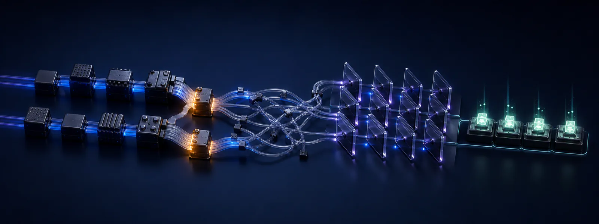
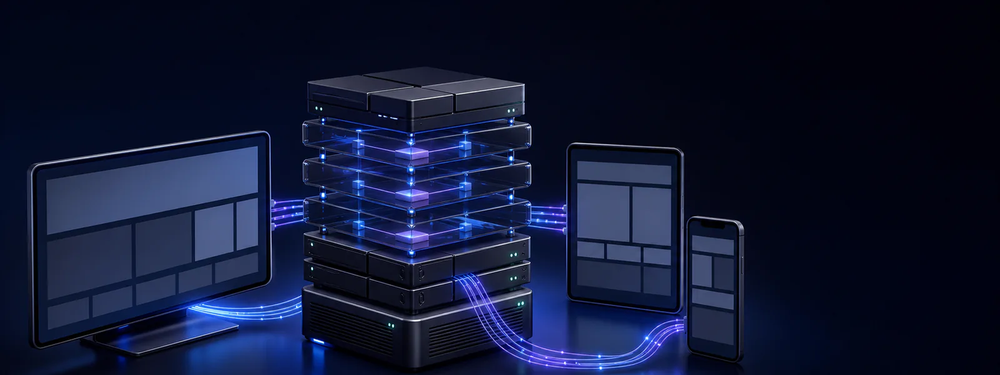
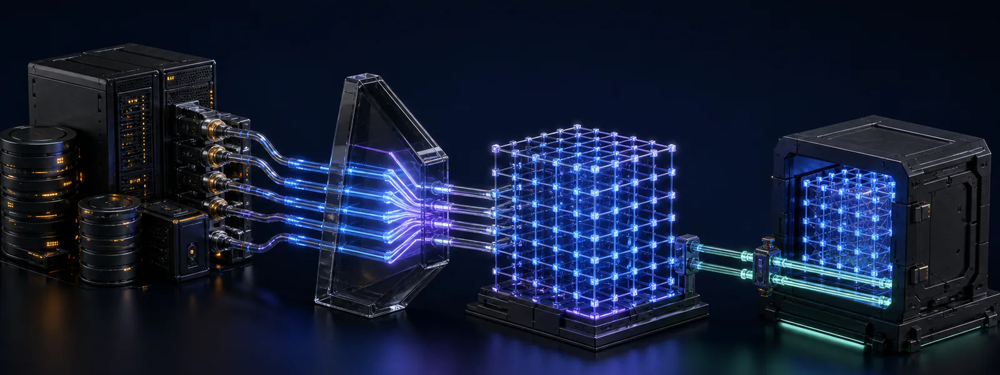
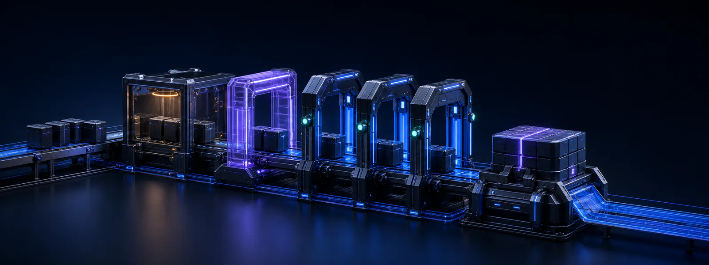
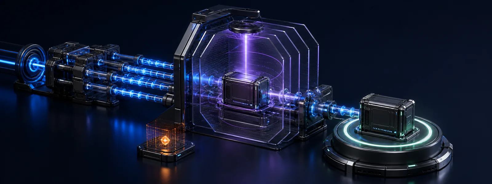
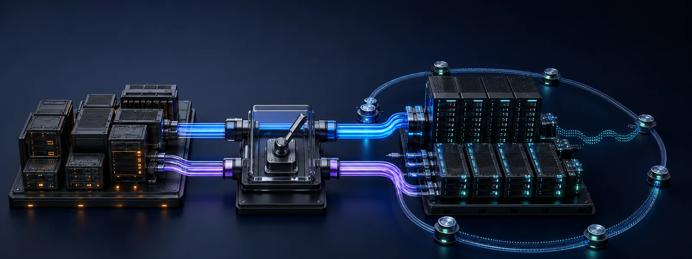

01
요구 정의 · 업무 분석
시스템이 아니라 업무를 먼저 이해합니다.
- 현업 인터뷰와 AS-IS 분석으로 업무 흐름·병목·예외 케이스를 문서화합니다
- 기능 요구와 비기능 요구(성능·보안·가용성)를 측정 가능한 기준으로 정의합니다
- WBS와 마일스톤으로 일정과 리스크를 투명하게 관리합니다
가전 플랫폼·금융 서비스·에너지 인프라 — 대규모 시스템을 턴키로 구축하고 안정적으로 운영합니다. 요구 정의와 화면 설계부터 보안 검증과 이행, 운영 SLA까지 하나의 책임 아래 묶습니다.
Global Technology Partners
글로벌 기술 파트너의 임베디드·
복잡한 서비스와 업무를 하나의 시스템으로 연결합니다. 사용자 서비스부터 관리자·

시스템이 아니라 업무를 먼저 이해합니다.

10년 운영을 견딜 구조와, 설명 없이도 쓰이는 화면.

데이터가 곧 자산입니다 — 스키마부터 연동까지 정합성 있게.

코드 리뷰와 CI/CD 위에서, 매주 동작하는 소프트웨어로 보여드립니다.

오픈 전에 미리 다 겪어봅니다 — 성능도, 침투도.

오픈은 하루, 운영은 10년 — 무중단으로 넘기고, 책임지고 지킵니다.
AX·
영상·
모바일 금융·
설비 이상 조기감지·
영상 인식 교통·
과제 계열 금융 앱·
해결 HCE 선불카드 · 그룹 소통앱 · 홈페이지 고도화
성과 다년간 금융 그룹 SI 파트너로 운영·
과제 가전 커넥티드 서비스·
해결 ThinQ 앱 · webOS 앱·
성과 다년간 가전·
과제 충전 인프라의 관제·
해결 충전기 연동·
성과 에너지 도메인 충전 플랫폼 수행력 확보 — EVCP 제품으로 연결
중소·
국책 과제 주관기관으로 과제를 직접 수행하고 현장 실증까지 완료한 경험을 보유합니다.
기업부설연구소(2008년 설립)와 벤처기업·
기획·
현장 과제와 지원사업 적합성 검토
목표·
수요기업·
데이터 수집·
산출물 정리 및 성과 검증 대응
인접 라인·
상담부터 결과 평가까지, 전 과정을 함께 수행합니다.